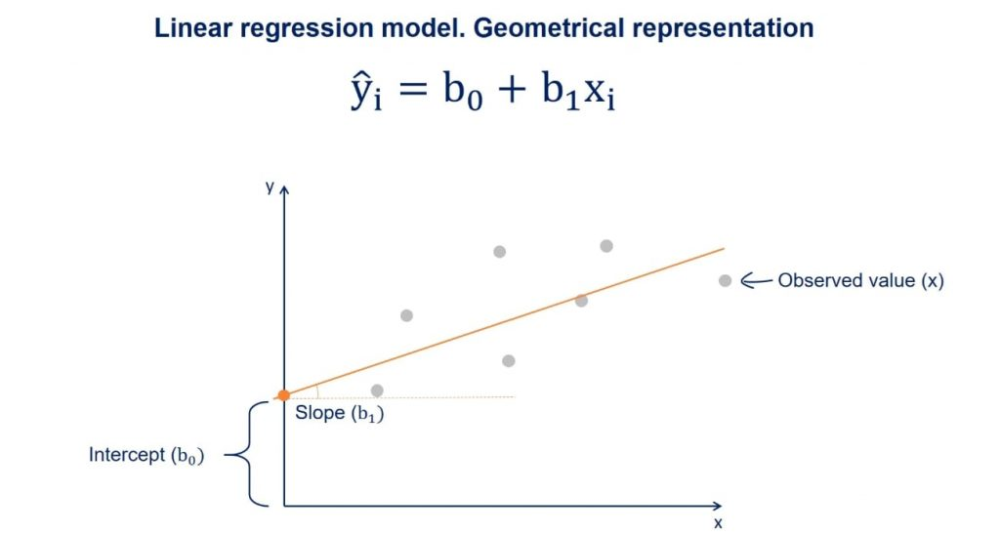

library(tidyverse)
library(caret)
library(readxl)Presentation 5A: Intro to Regression in R
In this section we’ll look at how to define and fit regression models in R.
Load packages
Linear Regression
We will perform a linear regression using daily cigarettes smoked and exercise level as predictors, \(X\), and lived years as the outcome, \(y\).

Load data
In order to focus on the technical aspects we’ll use a simple toy dataset. It contains the number of cigarettes smoked per day and how long the person lived. It is inspired by this paper if you want to take a look.
df_smoke <- read_csv('../data/smoking_cat.csv')
df_smoke# A tibble: 100 × 3
daily_cigarettes life exercise
<dbl> <dbl> <dbl>
1 7 76 0
2 11 73 0
3 27 72 1
4 23 71 0
5 13 74 0
6 11 76 1
7 20 71 0
8 6 76 1
9 23 72 1
10 32 70 2
# ℹ 90 more rowsWe have daily cigarettes smoked (number) and life (in years). Both of these are numeric variables. We also have a variable named exercise, it seems that this variable might in fact be an ordinal factor variable. Exercise is encoded as a numeric variable, so the first thing we will do is to convert it to a factor.
df_smoke %>% distinct(exercise)# A tibble: 3 × 1
exercise
<dbl>
1 0
2 1
3 2df_smoke <- df_smoke %>%
mutate(exercise = as.factor(exercise))Split Data into Training and Test Set
Now, we will split our data into a test and a training set. There are numerous ways to do this. We here show sample_frac from dplyr:
# Set seed to ensure reproducibility
set.seed(123)
# add an ID column to keep track of observations
df_smoke$ID <- 1:nrow(df_smoke)
train <- df_smoke %>%
sample_frac(0.75)
nrow(train)[1] 75head(train)# A tibble: 6 × 4
daily_cigarettes life exercise ID
<dbl> <dbl> <fct> <int>
1 29 72 1 31
2 16 73 0 79
3 5 78 1 51
4 3 77 0 14
5 4 79 2 67
6 23 71 1 42As you can see, the ID’s in train are shuffled and it only has 75 rows since we asked for 75% of the data. Now all we have to do is identify the other 25%, i.e. the observations not in train.
#from df_smoke remove what is in train by checking the ID column
test <- df_smoke %>%
filter(!ID %in% train$ID)
# OR
test <- anti_join(df_smoke, train, by = 'ID')
nrow(test)[1] 25head(test)# A tibble: 6 × 4
daily_cigarettes life exercise ID
<dbl> <dbl> <fct> <int>
1 7 76 0 1
2 11 73 0 2
3 27 72 1 3
4 32 70 2 10
5 8 75 0 11
6 16 75 2 24Defining the model
As stated above, a linear regression model generally has the form of:
\[y = β_0 + β_1 * x_i\]
Where we refer to \(β_0\) as the intercept and \(β_1\) as the coefficient. There will typically be one coefficient for each predictor. The goal of modelling is to estimate the values of \(β_0\) and all \(β_i\).
We need to tell R which of our variables is the outcome, \(y\), and which predictors, \(x_i\), we want to include in the model. This is referred to in documentation as the model’s formula. Have a look:
#the formula is written like so:
lm(y ~ x_1 + x_2 + ...)
#see the help
?lmIn our case, \(y\) is the number of years lived and we have a two predictors \(x_1\) (numeric), the number of cigarettes smoked per day, and \(x_2\) (ordinal factor), exercise level (0, 1 or 2). So that will be our model formulation:
#remember to select the training data subset we defined above!
model <- lm(life ~ daily_cigarettes + exercise, data = train)Modelling results
By calling lm we have already trained our model! The return of lm() is, just like the return of prcomp(), a named list.
class(model)[1] "lm"names(model) [1] "coefficients" "residuals" "effects" "rank"
[5] "fitted.values" "assign" "qr" "df.residual"
[9] "contrasts" "xlevels" "call" "terms"
[13] "model" Let’s have a look at the results. The summary gives us a lot of information about the model we trained:
# View model summary
summary(model)
Call:
lm(formula = life ~ daily_cigarettes + exercise, data = train)
Residuals:
Min 1Q Median 3Q Max
-1.58295 -0.53972 -0.01596 0.53773 1.70257
Coefficients:
Estimate Std. Error t value Pr(>|t|)
(Intercept) 77.582954 0.234237 331.216 < 2e-16 ***
daily_cigarettes -0.285521 0.009401 -30.372 < 2e-16 ***
exercise1 1.095475 0.249402 4.392 3.84e-05 ***
exercise2 2.372227 0.260427 9.109 1.48e-13 ***
---
Signif. codes: 0 '***' 0.001 '**' 0.01 '*' 0.05 '.' 0.1 ' ' 1
Residual standard error: 0.8578 on 71 degrees of freedom
Multiple R-squared: 0.9338, Adjusted R-squared: 0.931
F-statistic: 333.7 on 3 and 71 DF, p-value: < 2.2e-16The Residuals section summarizes the distribution of the residuals, which is the difference between the actual observed \(y\) values and the fitted \(y\) values.
The Coefficients table shows the estimated values for each coefficient including the intercept, along with their standard errors, t-values, and p-values. These help to determine the significance of each predictor.
In the bottom section we have some information about how well the model fits the training data.
The Residual Standard Error (RSE) is the standard deviation of the residuals (prediction errors). It tells you, on average, how far the observed values deviate from the regression line.
The R-squared value indicates the proportion of variance explained by the model, with the Adjusted R-squared accounting for the number of predictors.
Finally, the F-statistic and its p-value tests whether the model as a whole explains a significant portion of the variance in the response variable (the outcome, \(y\)).
Lets plot the results:
par(mfrow=c(2,2))
plot(model)Model interpretation
Plot to understand the model:
What do these results mean? Our model formulation is:
\[life = β_0 + β_1 * cigarettes + β_2 * exercise\]
And we estimated these values:
model$coefficients (Intercept) daily_cigarettes exercise1 exercise2
77.5829543 -0.2855213 1.0954747 2.3722266 Therefore:
The intercept \(β_0\) is the number of years we estimated a person in this dataset will live if they smoke 0 cigarettes and do not exercise. It is 77.6 years.
The coefficient of cigarettes per day is -0.29. This means for every 1 unit increase in cigarettes (one additional cigarette per day) the life expectancy decreases by 0.29 years. Similarly for the exercise variable, if you exercise your life expectancy will go up 1.1-2.4 years compared to no exercise, independently of how many cigarettes you smoke.
Model performance
We now use our held out test data to evaluate the model performance. For that we will predict life expectancy for the 25 observations in test and compare with the observed values.
#use the fitted model to make predictions for the test data
y_pred <- predict(model, test)Let’s see how the predicted values fit with the observed values.
pred <- tibble(pred = y_pred,
real = test$life)
ggplot(pred,
aes(x=real, y=pred)) +
geom_point()Not too bad! We usually calculate the root mean square error (rmse) between predictions and the true observed values to numerically evaluate regression performance:
RMSE(pred$real,pred$pred)[1] 0.8778289Our predictions are on average 0.88 years ‘off’.
Classification
Classification is the method we use when the outcome variable we are interested in is not continuous, but instead consists of two or more classes.
In order to have a categorical outcome, we’ll add a column to our toy data that describes whether the person died before age 75 or not.
df_smoke <- df_smoke %>%
mutate(early_death = factor(ifelse(life < 75, 1, 0))) # Encoding: True/yes = 1, False/no = 0
df_smoke %>%
count(early_death)# A tibble: 2 × 2
early_death n
<fct> <int>
1 0 49
2 1 51Training and Test set with class data
Let’s remake our training and test data. This time we have classes that we would like to be in the same ratios in training and test set. We must check this is the case!
# Set seed to ensure reproducibility
set.seed(123)
#add an ID column to keep track of observations
df_smoke$ID <- 1:nrow(df_smoke)
train <- df_smoke %>%
sample_frac(0.75)
table(train$early_death)
0 1
36 39 test <- anti_join(df_smoke, train, by = 'ID')
table(test$early_death)
0 1
13 12 Luckily for us the division of the outcome variable classes between the train and test set is almost perfect. However, there may be cases where randomly splitting will not give you a balanced distribution. This is likely to happen if one class is much larger than the other(s). In these cases you should split your data in a non-random way, specifically ensuring a balanced train and test set.
Now let’s perform logistic regression to see whether there is an influence of the number of cigarettes and amount of exercise on the odds of the person dying before 75.
Logistic regression belongs to the family of generalized linear models. They all look like this:
\[ y \sim \beta * X \]
with:
- \(y\) the outcome
- \(\beta\) the coefficient matrix
- \(X\) the matrix of predictors
- \(\sim\) the link function
In a logistic regression model the link function is the logit. In a linear model the link function is the identity function (so ~ becomes =).
Logistic regression: Math
In order to understand what that means we’ll need a tiny bit of math.
Our \(y\) is either 0 or 1. However we cannot model that, so instead we will model the probability of the outcome being 1: \(P(earlydeath == 1)\). Except probabilities are bounded between 0 and 1 which is mathematically difficult to impose (it means all \(y's\) have to be between these two values and how are we gonna enforce that?) So instead, we will model the log-odds of early death:
\[ y = \log(\frac{P(earlydeath == 1)}{1-P(earlydeath == 1)})\]
It may not look like it but we promise you this \(y\) is a well behaved number because it can be anywhere between - infinity and + infinity. So therefore our actual model is:
\[ \log(\frac{P(earlydeath == 1)}{1-P(earlydeath == 1)} = \beta * X\]
And if we want to know what this means for the probability of dying early, we just take invert the link function:
\[ P(earlydeath == 1) = \frac{1}{1+ e^{(-y)}} \]
Which serves as the link between what we’re actually interested in (the probability of a person dying early) and what we’re modelling using logit. End of math.
Model formulation in R
So in order to fit a logistic regression we will use the function for generalized linear models, glm. We will specify that we want logistic regression (using the logit as the link) by setting family = binomial:
model_log <- glm(early_death ~ daily_cigarettes + exercise, data = train, family = "binomial")
summary(model_log)
Call:
glm(formula = early_death ~ daily_cigarettes + exercise, family = "binomial",
data = train)
Coefficients:
Estimate Std. Error z value Pr(>|z|)
(Intercept) -9.7171 3.4761 -2.795 0.00518 **
daily_cigarettes 0.8361 0.2876 2.907 0.00365 **
exercise1 -2.8037 1.9692 -1.424 0.15453
exercise2 -5.3671 2.8042 -1.914 0.05563 .
---
Signif. codes: 0 '***' 0.001 '**' 0.01 '*' 0.05 '.' 0.1 ' ' 1
(Dispersion parameter for binomial family taken to be 1)
Null deviance: 103.85 on 74 degrees of freedom
Residual deviance: 13.59 on 71 degrees of freedom
AIC: 21.59
Number of Fisher Scoring iterations: 9Model interpretation
We see from looking at the summary that the coefficient of exercise level 1 and level 2 is not significant. This means that we are not confident that doing any level of exercise has a significant impact on the probability of dying before 75 compared to doing no exercise. This does not mean that there can be no influence, merely that we do not have enough data to detect it if it is there.
Are you surprised? Exercise level was significant when we modelled the number of years lived with linear regressions.
With the number of daily cigarettes predictor we have a high degree of certainty that it influences the probability of dying before 75 (in this dataset!), but what does a coefficient of 0.84 mean?
We know that:
\[ P(earlydeath == 1) = \frac{1}{1+ e^{(-y)}} \]
and (leaving out the exercise level since it’s not significant):
\[ y = \beta_0 + \beta_1 * cigs \]
So how does \(y\) change as \(0.84 * cigs\) becomes larger? Let’s agree that \(y\) becomes larger. What does that mean for the probability of dying before 75? Is \(e^{(-y)}\) a large number if \(y\) is large? Luckily we have a calculator handy:
#exp(b) is e^b in R
exp(-1)[1] 0.3678794exp(-10)[1] 4.539993e-05exp(-100)[1] 3.720076e-44We see that \(e^{(-y)}\) becomes increasingly smaller with larger \(y\) which means that:
\[ P(earlydeath == 1) = \frac{1}{1+ small} \sim \frac{1}{1} \]
So the larger \(y\) the smaller \(e^{(-y)}\) and the closer we get to \(P(earlydeath == 1)\) being 1. That was a lot of math for: If the coefficient is positive you increase the likelihood of getting the outcome, i.e. dying before 75.
Model comparison
Now we know how to fit linear models and interpret the results. But often there are several predictors we could include or not include, so how do we know that one model is better than another?
There are several ways to compare models. One is the likelihood ratio test which tests whether adding predictors significantly improves model fit by comparing the log-likelihoods of the two models. Another much used comparison is to look at the AIC (Akaike Information Criterion) or BIC (Bayesian Information Criterion). Lower AIC/BIC values generally indicate a better trade-off between model fit and complexity.
For example we made this logistic regression model above:
summary(model_log)
Call:
glm(formula = early_death ~ daily_cigarettes + exercise, family = "binomial",
data = train)
Coefficients:
Estimate Std. Error z value Pr(>|z|)
(Intercept) -9.7171 3.4761 -2.795 0.00518 **
daily_cigarettes 0.8361 0.2876 2.907 0.00365 **
exercise1 -2.8037 1.9692 -1.424 0.15453
exercise2 -5.3671 2.8042 -1.914 0.05563 .
---
Signif. codes: 0 '***' 0.001 '**' 0.01 '*' 0.05 '.' 0.1 ' ' 1
(Dispersion parameter for binomial family taken to be 1)
Null deviance: 103.85 on 74 degrees of freedom
Residual deviance: 13.59 on 71 degrees of freedom
AIC: 21.59
Number of Fisher Scoring iterations: 9But exercise does not have a significant p-value. Perhaps we would have a better model if we only use dialy_cigarettes?
Let’s compare them:
model_reduced <- glm(early_death ~ daily_cigarettes, data = train, family = "binomial")
summary(model_reduced)
Call:
glm(formula = early_death ~ daily_cigarettes, family = "binomial",
data = train)
Coefficients:
Estimate Std. Error z value Pr(>|z|)
(Intercept) -9.3382 2.8813 -3.241 0.00119 **
daily_cigarettes 0.6228 0.1958 3.181 0.00147 **
---
Signif. codes: 0 '***' 0.001 '**' 0.01 '*' 0.05 '.' 0.1 ' ' 1
(Dispersion parameter for binomial family taken to be 1)
Null deviance: 103.852 on 74 degrees of freedom
Residual deviance: 20.408 on 73 degrees of freedom
AIC: 24.408
Number of Fisher Scoring iterations: 8We can use an anova with the Chi-square (kai-square) test to compare the log-likelihood of the two models. It is most common to compare the less complex model to the more complex model:
anova(model_reduced, model_log, test = 'Chisq')Analysis of Deviance Table
Model 1: early_death ~ daily_cigarettes
Model 2: early_death ~ daily_cigarettes + exercise
Resid. Df Resid. Dev Df Deviance Pr(>Chi)
1 73 20.408
2 71 13.590 2 6.8187 0.03306 *
---
Signif. codes: 0 '***' 0.001 '**' 0.01 '*' 0.05 '.' 0.1 ' ' 1The p-value of the Chi-square test tells us if there is evidence that the difference in log-likelihoods is significant. If it is not significant, we do not have evidence that the more complex model is a better fit than the less complex model and we would therefore choose the less complex model with fewer predictors since that gives us more statistical power and less overfitting.
In this case the p-value is significant which means that the more complex model, that includes exercises, is a better fit. Do you think this makes sense with the exercises levels not being significant predictors when we looked at summary(model_log).
Model Evaluation
Lastly, let’s evaluate our model using the test set, just like we did for the linear regression. First, we will predict the outcome for the test set:
y_pred <- predict(model_log, newdata = test, type = 'response')
y_pred 1 2 3 4 5 6
2.053739e-02 3.727265e-01 9.999569e-01 9.999914e-01 4.614593e-02 1.535095e-01
7 8 9 10 11 12
1.704256e-03 9.999998e-01 9.665682e-01 9.999803e-01 2.922587e-03 3.727265e-01
13 14 15 16 17 18
6.358678e-03 2.257685e-04 6.901515e-01 7.669379e-02 6.717464e-03 9.999006e-01
19 20 21 22 23 24
4.911941e-01 9.999569e-01 9.999679e-01 7.669379e-02 9.987809e-01 1.536393e-02
25
6.023842e-05 As you see, the predictions we get out are not \(yes\) or \(no\), they are instead a probability (as discussed above), so, we will convert them to class labels.
y_pred <- ifelse(as.numeric(y_pred) >= 0.5, 1, 0) %>%
as.factor()
y_pred [1] 0 0 1 1 0 0 0 1 1 1 0 0 0 0 1 0 0 1 0 1 1 0 1 0 0
Levels: 0 1Now we will compare the predicted class with the observed class for the test set. You can do this in different ways, but here we will use the accuracy.
\[ Accuracy = \frac{(True Positives + True Negatives)}{(True Positives + True Negatives + False Positives + False Negatives)}\]
You can calculate the accuracy yourself, or you can use a function like confusionMatrix() from the package caret which also provides you with individual metrics like sensitivity (true positive rate, recall) and specificity (true negative rate).
caret::confusionMatrix(y_pred, test$early_death)Confusion Matrix and Statistics
Reference
Prediction 0 1
0 13 2
1 0 10
Accuracy : 0.92
95% CI : (0.7397, 0.9902)
No Information Rate : 0.52
P-Value [Acc > NIR] : 2.222e-05
Kappa : 0.8387
Mcnemar's Test P-Value : 0.4795
Sensitivity : 1.0000
Specificity : 0.8333
Pos Pred Value : 0.8667
Neg Pred Value : 1.0000
Prevalence : 0.5200
Detection Rate : 0.5200
Detection Prevalence : 0.6000
Balanced Accuracy : 0.9167
'Positive' Class : 0
Kmeans Clustering
Clustering is a type of unsupervised learning technique used to group similar data points together based on their features. The goal is to find inherent patterns or structures within the data, e.g. to see whether the data points fall into distinct groups with distinct features or not.
Wine dataset
For this we will use the wine data set as an example:
library(ContaminatedMixt)
library(factoextra)Let’s load in the dataset
data('wine') #load dataset
df_wine <- wine %>% as_tibble() #convert to tibble
df_wine# A tibble: 178 × 14
Type Alcohol Malic Ash Alcalinity Magnesium Phenols Flavanoids
<fct> <dbl> <dbl> <dbl> <dbl> <int> <dbl> <dbl>
1 Barolo 14.2 1.71 2.43 15.6 127 2.8 3.06
2 Barolo 13.2 1.78 2.14 11.2 100 2.65 2.76
3 Barolo 13.2 2.36 2.67 18.6 101 2.8 3.24
4 Barolo 14.4 1.95 2.5 16.8 113 3.85 3.49
5 Barolo 13.2 2.59 2.87 21 118 2.8 2.69
6 Barolo 14.2 1.76 2.45 15.2 112 3.27 3.39
7 Barolo 14.4 1.87 2.45 14.6 96 2.5 2.52
8 Barolo 14.1 2.15 2.61 17.6 121 2.6 2.51
9 Barolo 14.8 1.64 2.17 14 97 2.8 2.98
10 Barolo 13.9 1.35 2.27 16 98 2.98 3.15
# ℹ 168 more rows
# ℹ 6 more variables: Nonflavanoid <dbl>, Proanthocyanins <dbl>, Color <dbl>,
# Hue <dbl>, Dilution <dbl>, Proline <int>This dataset contains 178 wine, each corresponding to one of three different cultivars of wine. It has 13 numerical columns that record different features of the wine.
We will try out a popular method, k-means clustering. It works by initializing K centroids and assigning each data point to the nearest centroid. The algorithm then recalculates the centroids as the mean of the points in each cluster, repeating the process until the clusters stabilize. You can see an illustration of the process below. Its weakness is that we need to define the number of centroids, i.e. clusters, beforehand.
Running k-means
For k-means it is very important that the data is numeric and scaled so we will do that before running the algorithm.
# Set seed to ensure reproducibility
set.seed(123)
# Pull numeric variables and scale these
kmeans_df <- df_wine %>%
dplyr::select(where(is.numeric)) %>%
mutate(across(everything(), scale))
kmeans_df# A tibble: 178 × 13
Alcohol[,1] Malic[,1] Ash[,1] Alcalinity[,1] Magnesium[,1] Phenols[,1]
<dbl> <dbl> <dbl> <dbl> <dbl> <dbl>
1 1.51 -0.561 0.231 -1.17 1.91 0.807
2 0.246 -0.498 -0.826 -2.48 0.0181 0.567
3 0.196 0.0212 1.11 -0.268 0.0881 0.807
4 1.69 -0.346 0.487 -0.807 0.928 2.48
5 0.295 0.227 1.84 0.451 1.28 0.807
6 1.48 -0.516 0.304 -1.29 0.858 1.56
7 1.71 -0.417 0.304 -1.47 -0.262 0.327
8 1.30 -0.167 0.888 -0.567 1.49 0.487
9 2.25 -0.623 -0.716 -1.65 -0.192 0.807
10 1.06 -0.883 -0.352 -1.05 -0.122 1.09
# ℹ 168 more rows
# ℹ 7 more variables: Flavanoids <dbl[,1]>, Nonflavanoid <dbl[,1]>,
# Proanthocyanins <dbl[,1]>, Color <dbl[,1]>, Hue <dbl[,1]>,
# Dilution <dbl[,1]>, Proline <dbl[,1]>Kmeans clustering in R is easy, we simply run the kmeans() function:
set.seed(123)
kmeans_res <- kmeans_df %>%
kmeans(centers = 4, nstart = 25)
kmeans_resK-means clustering with 4 clusters of sizes 28, 56, 49, 45
Cluster means:
Alcohol Malic Ash Alcalinity Magnesium Phenols
1 -0.7869073 0.04195151 0.2157781 0.3683284 0.43818899 0.6543578
2 0.9580555 -0.37748461 0.1969019 -0.8214121 0.39943022 0.9000233
3 0.1860184 0.90242582 0.2485092 0.5820616 -0.05049296 -0.9857762
4 -0.9051690 -0.53898599 -0.6498944 0.1592193 -0.71473842 -0.4537841
Flavanoids Nonflavanoid Proanthocyanins Color Hue Dilution
1 0.5746004 -0.5429201 0.8888549 -0.7346332 0.2830335 0.60628629
2 0.9848901 -0.6204018 0.5575193 0.2423047 0.4799084 0.76926636
3 -1.2327174 0.7148253 -0.7474990 0.9857177 -1.1879477 -1.29787850
4 -0.2408779 0.3315072 -0.4329238 -0.9177666 0.5202140 0.07869143
Proline
1 -0.5169332
2 1.2184972
3 -0.3789756
4 -0.7820425
Clustering vector:
[1] 2 2 2 2 1 2 2 2 2 2 2 2 2 2 2 2 2 2 2 2 2 1 2 2 2 1 2 2 2 2 2 2 2 2 2 2 2
[38] 2 2 2 2 2 2 1 2 2 2 2 2 2 2 2 2 2 2 2 2 2 2 4 4 4 4 1 4 1 2 4 4 1 4 1 4 1
[75] 1 4 4 4 1 1 4 4 4 3 1 4 4 4 4 4 4 4 4 1 1 1 1 4 1 1 4 4 1 4 4 4 4 4 4 1 1
[112] 4 4 4 4 4 4 4 4 4 1 1 1 1 1 4 1 4 4 4 3 3 3 3 3 3 3 3 3 3 3 3 3 3 3 3 3 3
[149] 3 3 3 3 3 3 3 3 3 3 3 3 3 3 3 3 3 3 3 3 3 3 3 3 3 3 3 3 3 3
Within cluster sum of squares by cluster:
[1] 307.0966 268.5747 302.9915 289.9515
(between_SS / total_SS = 49.2 %)
Available components:
[1] "cluster" "centers" "totss" "withinss" "tot.withinss"
[6] "betweenss" "size" "iter" "ifault" We can call kmeans_res$centers to inspect the values the centroids. For example the center of cluster 1 is placed at the coordinates -0.79 for Alcohol, 0.04 for Malic Acid, 0.22 for Ash and so on. Since our data has 13 dimensions, i.e. features, the cluster centers also do.
This is not super practical if we would like to visually inspect the clustering since we cannot plot in 13 dimensions. How could we solve this?
Visualizing k-means results
We would like to see where our wine bottles and their clusters lie in a low-dimensional space. This can easily be done using the fviz_cluster()
fviz_cluster(object = kmeans_res,
data = kmeans_df,
palette = c("#2E9FDF", "#00AFBB", "#E7B800", "orchid3"),
geom = "point",
ellipse.type = "norm",
ggtheme = theme_bw())Optimal number of clusters
There are several ways to investigate the ideal number of clusters and fviz_nbclust from the factoextra package provides three of them:
The so-called elbow method observes how the sum of squared errors (sse) changes as we vary the number of clusters. This is also sometimes referred to as “within sum of square” (wss).
kmeans_df %>%
fviz_nbclust(kmeans, method = "wss")The gap statistic compares the within-cluster variation (how compact the clusters are) for different values of K to the expected variation under a null reference distribution (i.e., random clustering).
kmeans_df %>%
fviz_nbclust(kmeans, method = "gap_stat")Both of these tell us that there should be three clusters and we also know that there are three cultivars of wine in the dataset. Let’s redo k-means with three centroids.
# Set seed to ensure reproducibility
set.seed(123)
#run kmeans
kmeans_res <- kmeans_df %>%
kmeans(centers = 3, nstart = 25)#add updated cluster info to the dataframe
fviz_cluster(kmeans_res, data = kmeans_df,
palette = c("#2E9FDF", "#00AFBB", "#E7B800", "orchid3"),
geom = "point",
ellipse.type = "norm",
ggtheme = theme_bw())